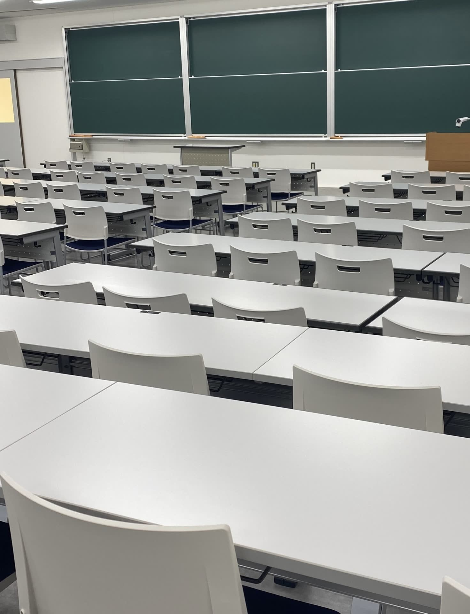

対話を中心にした少人数教育
1年次からゼミ形式の授業を取り入れ、教員や仲間と議論しながら考えを深めます。
✦Academics✦
4学部8学科。学部の枠を越えて履修できる副専攻制度で、関心に合わせて学びを広げられます。

日本文学科／英語英米文学科
心理学科／教育学科
国際関係学科／観光文化学科

食物栄養学科／生活デザイン学科
入学直後から少人数ゼミに所属し、大学での学び方を基礎から身につけます。
データサイエンスやジェンダー論など、所属学部以外の分野も体系的に学べます。
教員免許や管理栄養士など、目指す進路に合わせた課程を用意しています。
✦Campus life✦


✦Admissions✦
出願資格・日程・選考方法の詳細は、必ず最新の募集要項でご確認ください。
面談やプレゼンテーションで、学ぶ意欲と本学との相性を丁寧に見る入試です。
在籍高校の推薦にもとづき、書類と面接で選考します。指定校・公募があります。
本学独自の学力試験で選考します。試験科目・方式は学科ごとに異なります。
大学入学共通テストの成績で選考します。本学での個別試験は課しません。
※ 出願期間・試験日は募集要項公開後に掲載します（仮）
OPEN CAMPUS
開催日程は近日公開（仮）／オンライン参加も予定